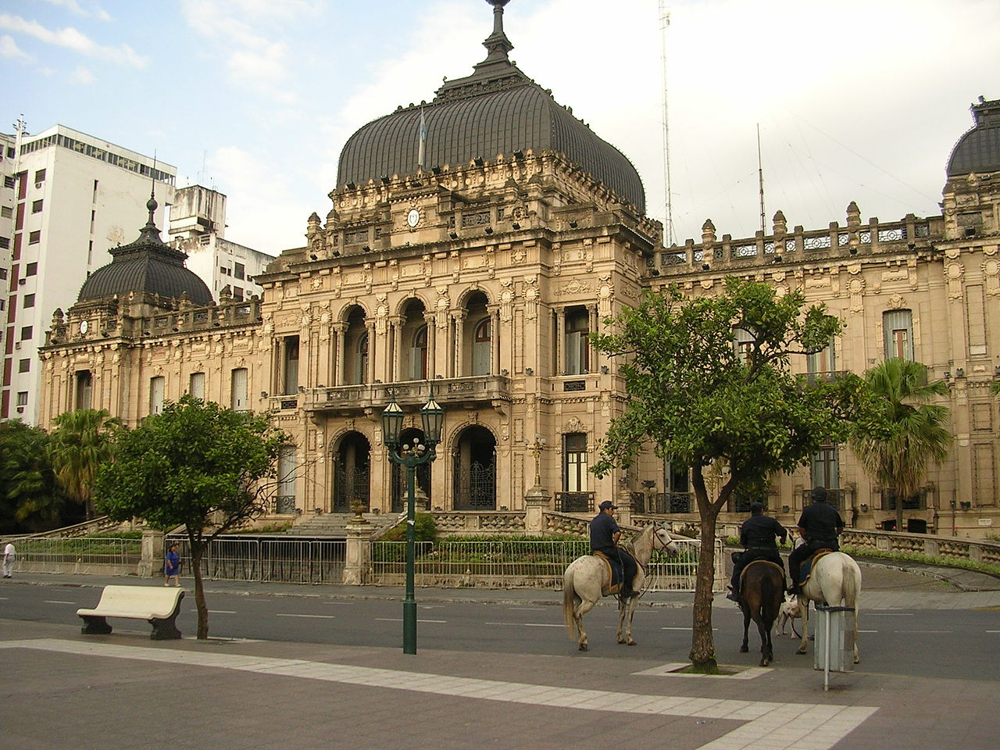
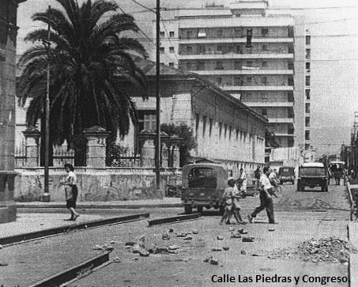
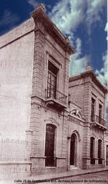
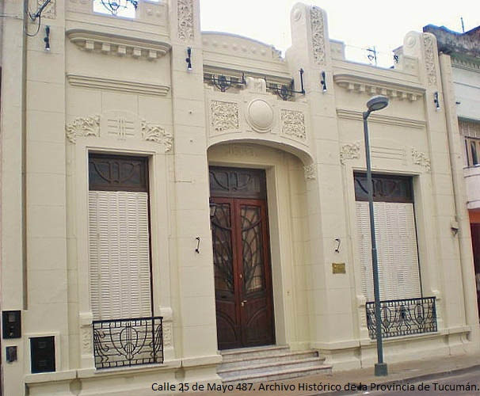

El Archivo colonial de San Miguel de Tucumán empezó a formarse con el Libro de la Fundación de la ciudad y con las Actas Capitulares en 1565 que estaban hacia 1660, guardados en la llamada Caja del Archivo, cerrada con tres llaves, depositadas en poder del Teniente de Gobernador y de los Alcaldes de primero y segundo voto.
Cuando en 1685 se trasladó la ciudad de San Miguel de Tucumán (desde Ibatín), el patrimonio documental figuró en el acto formal de abandono del viejo sitio, el 24 de septiembre de 1685.
Narra el acta que aquel 24 de Septiembre las autoridades iniciaron la ceremonia jurídica de mudar la ciudad, llevando al nuevo emplazamiento los símbolos básicos. Sacaron del centro de la plaza el Árbol de la Justicia y el Cepo de las Prisiones y lo cargaron en una carreta. Inmediatamente, pusieron allí también la Caja del Archivo de los papeles de esta ciudad y su Cabildo, liada con un lazo de cuero fresco y cerrada con tres llaves, las que se distribuyeron entre la Justicia Mayor, el Alférez Real y el Alcalde de Primer Voto.
Era una época en que los documentos no eran tantos: en primer lugar, porque la gente que sabía escribir era poca y, en segundo, porque el papel (importado y de tierras lejanas), resultaba caro y escaso.
En 1889, el Gobernador Lídoro Quinteros (1887-1890) envió a la Legislatura un proyecto de Ley de creación del “Archivo General de la Provincia” para que se guardaran y conservaran los expedientes provenientes de los Tribunales, los registros de los Escribanos y los documentos de la Administración. Lo consideraba una indiscutible necesidad de orden administrativo y seguridad pública, ya que hasta ese momento los expedientes que se habían formado en Tribunales quedaban en poder de los actuarios, así como los protocolos de los Escribanos en sus registros. Con lo cual sentaba el principio de que, por su naturaleza, estos documentos eran públicos y que, por lo tanto, su conservación como su arreglo, debían ser confiados a una autoridad que los custodiara.
La Legislatura tardó tres años en aprobar esta iniciativa, que promulgó por Ley el Gobernador Próspero García (1890-1893), el 28 de febrero de 1892.
Entre los locales que ocupó el Archivo General, consta que funcionó en una vetusta casona en la Calle Las Piedras y Congreso. Hoy el edificio ya no existe y en su lugar se construyó el Juzgado Federal.

En 1909, el Dr. Juan B. Terán, presentó su proyecto de fundación de la Universidad de Tucumán, en el inciso final del Art. 10 se establecía, como instituto anexo, al Archivo Histórico, que se formaría con todos los documentos existentes en el Archivo General de la Provincia de fecha anterior a 1750. Su texto fue respetado en la Ley que se promulgó el 12 de julio de 1912. En 1913, el gobernador Ernesto Padilla (1913-1917) hizo construir el edificio de dos plantas en la calle 24 de septiembre 871, donde actualmente funciona el Archivo General de la Provincia.
El Dr. Padilla, encargó la organización del archivo a Ricardo Jaimes Freyre. Sin embargo, según la memoria anual del Archivo Histórico elevada en 1920 por su director Don Samuel Díaz, los documentos que formaban el Archivo Histórico de la Provincia no fueron organizados ni clasificados.

En 1916, el Archivo entra en pleno funcionamiento institucional, a partir de su traslado al local de la calle 24 de septiembre, terminado de construir en 1915. Allí, Ernesto Padilla hizo colocar una placa de mármol que rezaba, en latín:
“HIC INVISERE LICET / IN TABULARIIS / RERUM GESTARUM- MONUMENTA / IN MUSEO TEMPORIS ACTI RELIQUIAS / PATRIAE DECUS IMPERITURUM / QUAE / UNO SUB TECTO COMPOSITA / PROVINTIA TUCUMANA / E. PADILLA CONSULE / BENEMERENTI DIGNISSIMAE URBI / TUCUMANORUM CAPITI DICAVIT / ANIVERSARIO CII A VICTORIA / SEPTEMBRIS / PRIMO ANNO SAECULARI ADVENTANTI / A. D. MCMXVI“
Lo que se traduce así:
“Aquí puede visitarse, en los archivos, los testimonios de las hazañas; en el museo, los vestigios del tiempo pasado, gloria de la patria que ha de gobernar los hechos que la provincia de Tucumán ha reunido bajo un solo techo. El gobernador Ernesto padilla los consagró a la benemérita y dignísima ciudad capital de los tucumanos, en el centésimo tercer aniversario de la victoria de septiembre y aproximándose el primer centenario.
Año del señor 1916.”
En el año 1920, durante la gestión del gobernador Juan Bautista Bascary (1917-1920), el poder ejecutivo a través de un decreto dispuso “la compulsa, ordenación metódica y publicación de los documentos (…)”; para esta labor fue designado el Dr. Lizondo Borda, no obstante, esta vez tampoco pudo concretarse la organización planteada ya que una intervención federal dejo el decreto sin aplicación.
Con el estallido de los sucesos que dieron lugar a la Reforma Universitaria de Córdoba en 1918, el rector de la Universidad de Tucumán, el Dr. Juan B. Terán, solicitó su nacionalización al Congreso Nacional, siendo acompañado en el pedido por la flamante Federación Universitaria de Tucumán y la Federación Universitaria Argentina (FUA). Si bien fue nacionalizada en 1921 con la promulgación de la Ley 11.027, recién en 1935 se dictaron los instrumentos legales ordenando esta situación. Como consecuencia de esto, el Archivo no podía seguir bajo su órbita y, durante la Administración del Dr. Miguel Campero (1935-1939), se dictó un decreto por el cual se creaba una Junta Conservadora, de cinco miembros ad honorem, para que se encargase de conservar, ordenar y publicar los documentos del Archivo, habida cuenta de su naturaleza e importancia. Entre ellos se encontraban el filósofo Alberto Rougés, el historiador Manuel Lizondo Borda, el recopilador Juan Alfonso Carrizo, el doctor Emilio Catalán, y el jurista Francisco Padilla. Este órgano tenía el propósito de conservar, ordenar y publicar la vasta y diversa documentación existente. En este sentido la Junta elaboró un plan de trabajo y organización, que incluía la realización de un inventario y clasificación, con el objetivo de su publicación y difusión, cuyo punto culminante fue la aparición de los tomos I y II de los Documentos Coloniales, los cuales reflejaban un espíritu que privilegiaban el desarrollo y el estudio de la Historia Regional con documentos propios.
En 1943, por gestión del historiador Carlos Luque Colombres, se ampliaron los fondos del Archivo Histórico, incorporándose los expedientes y protocolos hasta 1860, los documentos administrativos y el archivo de la Legislatura hasta 1890, como así también la colección “Anselmo Rojo”, con documentos históricos que van desde 1817 a 1869.
A finales de 1950, el sistema de la Junta se dejó de lado y se convirtió en la Dirección de Archivo Histórico, que siguió funcionando en el mismo edificio. En cuanto a los papeles que se debían incorporar, en el decreto del 8 de febrero de 1978, se ampliaban los límites de época de los documentos; al disponer que se estimaba como documentación histórica toda aquella anterior a 50 años, y disponía que su pase del Archivo General al Archivo Histórico se realizaría todos los años en forma automática. Se planteó aquí un problema burocrático espacial: al compartir ambos Archivos el edificio y siendo el sitio destinado al Archivo Histórico muy pequeño, las condiciones para la conservación del patrimonio documental no estaban garantizadas, lo cual frustró el traspaso del acervo.
Con la vuelta de la democracia, durante la gobernación de Fernando Riera (1983-1987), se estableció que el Archivo Histórico funcionara en un nuevo edificio, pero recién en el gobierno del Ing. José Domato (1987-1991), parecieron dadas las bases para que, por fin, el Archivo Histórico pudiese tener instalaciones propias, resolviéndose por decreto otorgar el edificio de calle 25 de Mayo 487, su sede hasta la actualidad. Allí comenzaron obras de arreglo y remodelación, las que fueron suspendidas por la Ley de emergencia económica de 1991, que detuvo todas las obras públicas de la provincia.
En 1996, durante la gobernación de Antonio Bussi (1995-1999), se fusionó el Archivo General con el Archivo Histórico, bajo una misma dirección, hasta que, en Enero del año 2000, por Decreto del Gobernador Julio Miranda (1999-2003), se separaron nuevamente, ambos bajo la dependencia de la Secretaria de Estado de Gobierno y Justicia.
Durante la gobernación de Julio Miranda (1999-2003), se devolvió al Archivo Histórico de la Provincia el local que le fuera anteriormente otorgado. El edificio requirió trabajos de refacción y remodelación para adecuarlo a sus funciones, de ese modo, desde el 19 de julio del 2001 el Archivo Histórico de la Provincia de Tucumán goza de un lugar propio, en 25 de Mayo 487.
